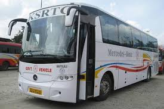

KSRTC BUS

The corporation's history dates back to before the formation of Kerala, making it one of India's oldest
state-operated public road transport services. The Travancore government, headed by King Chithira Thirunal
Balarama Varma, decided to establish the Travancore State Transport Department (TSTD) to improve the
existing public-transport system
Go Back..